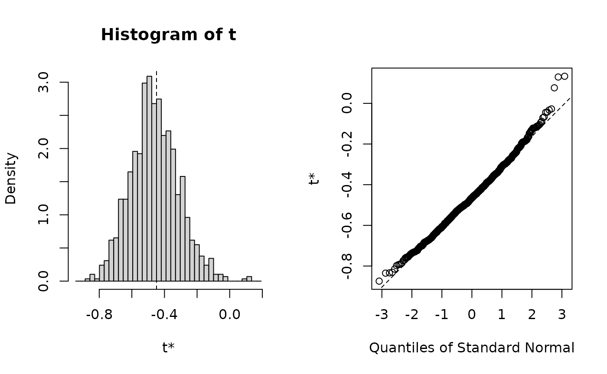

Background
p-values can be computed by inverting the corresponding confidence intervals, as described in Section 14.2 of Thulin (2024) and Section 3.12 in Hall (1992). This package contains functions for computing bootstrap p-values in this way. The approach relies on the fact that:
- The p-value of the two-sided test for the parameter theta is the smallest alpha such that theta is not contained in the corresponding 1-alpha confidence interval,
- For a test of the parameter theta with significance level alpha, the set of values of theta that aren’t rejected by the two-sided test (when used as the null hypothesis) is a 1-alpha confidence interval for theta.
Custom hypothesis tests
Bootstrap p-values for hypothesis tests based on boot
objects can be obtained using the boot.pval function. The
example below, based in part on code from Section
7.4.2 of Modern Statistics with R, shows how to implement a
bootstrap correlation test.
First, we create a function for computing the correlation given a
bivariate dataset and a vector containing row numbers (the indices of
the bootstrap sample). We also include a method option to
allow the user to choose which type of correlation is used:
cor_boot <- function(data, row_numbers, method = "pearson")
{
# Obtain the bootstrap sample:
sample <- data[row_numbers,]
# Compute and return the statistic for the bootstrap sample:
return(cor(sample[[1]], sample[[2]], method = method))
}Let’s say that we wish to test the correlation between the variables
hp and drat in the mtcars
data:
mtcars |> plot(hp ~ drat, data = _)We subset the data (below I use the base R function
subset for this; see my post on base R
replacements of tidyverse functions for more on this)
and then use boot to draw 999 bootstrap samples:
library(boot)
boot_res <- mtcars |>
subset(select = c(hp, drat)) |>
boot(statistic = cor_boot,
R = 999)If we like, we can plot the bootstrap distribution:
plot(boot_res)
And compute confidence intervals:
boot.ci(boot_res)
#> Warning in boot.ci(boot_res): bootstrap variances needed for studentized
#> intervals
#> BOOTSTRAP CONFIDENCE INTERVAL CALCULATIONS
#> Based on 999 bootstrap replicates
#>
#> CALL :
#> boot.ci(boot.out = boot_res)
#>
#> Intervals :
#> Level Normal Basic
#> 95% (-0.7289, -0.1479 ) (-0.7599, -0.1645 )
#>
#> Level Percentile BCa
#> 95% (-0.7330, -0.1376 ) (-0.6819, -0.0458 )
#> Calculations and Intervals on Original Scale
#> Some BCa intervals may be unstableTo compute the p-value corresponding to the different intervals, we
can now use boot.pval:
# Compute the bootstrap p-value based on the percentile interval:
library(boot.pval)
boot.pval(boot_res, type = "perc")
#> [1] 0.008008008For studentized intervals, we also need to estimate the variance of the statistic, e.g. using an inner bootstrap. We create a new function for this, run a new resampling, and compute the studentized p-value:
cor_boot_student <- function(data, row_numbers, method = "pearson")
{
sample <- data[row_numbers,]
correlation <- cor(sample[[1]], sample[[2]], method = method)
inner_boot <- boot(sample, cor_boot, 100)
variance <- var(inner_boot$t)
return(c(correlation, variance))
}
# Run the resampling:
boot_res <- mtcars |>
subset(select = c(hp, drat)) |>
boot(cor_boot_student, 999)
# Compute the bootstrap p-value based on the studentized interval:
boot.pval(boot_res, type = "stud")
#> [1] 0.06306306That’s all there is to it! Note that using boot.pval is
completely analogous to how we use boot.ci from
boot.
An example from boot
The following example is an extensions of that given in the
documentation for boot::boot:
# Hypothesis test for the city data
# H0: ratio = 1.4
ratio <- function(d, w) sum(d$x * w)/sum(d$u * w)
city.boot <- boot(city, ratio, R = 999, stype = "w", sim = "ordinary")
boot.pval(city.boot, theta_null = 1.4)
#> [1] 0.4874875
# Studentized test for the two sample difference of means problem
# using the final two series of the gravity data.
diff.means <- function(d, f)
{
n <- nrow(d)
gp1 <- 1:table(as.numeric(d$series))[1]
m1 <- sum(d[gp1,1] * f[gp1])/sum(f[gp1])
m2 <- sum(d[-gp1,1] * f[-gp1])/sum(f[-gp1])
ss1 <- sum(d[gp1,1]^2 * f[gp1]) - (m1 * m1 * sum(f[gp1]))
ss2 <- sum(d[-gp1,1]^2 * f[-gp1]) - (m2 * m2 * sum(f[-gp1]))
c(m1 - m2, (ss1 + ss2)/(sum(f) - 2))
}
grav1 <- gravity[as.numeric(gravity[,2]) >= 7, ]
grav1.boot <- boot(grav1, diff.means, R = 999, stype = "f",
strata = grav1[ ,2])
boot.pval(grav1.boot, type = "stud", theta_null = 0)
#> [1] 0.04904905